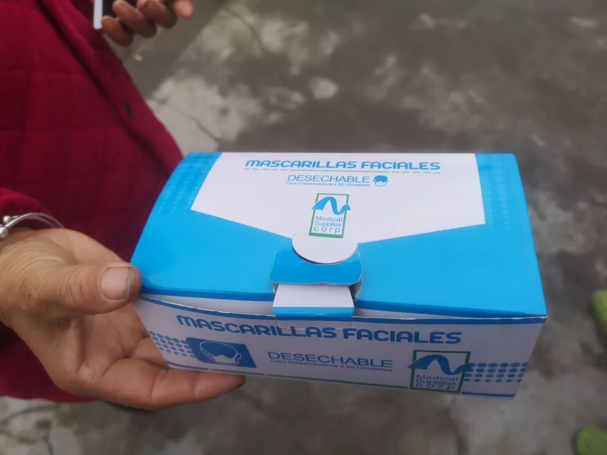
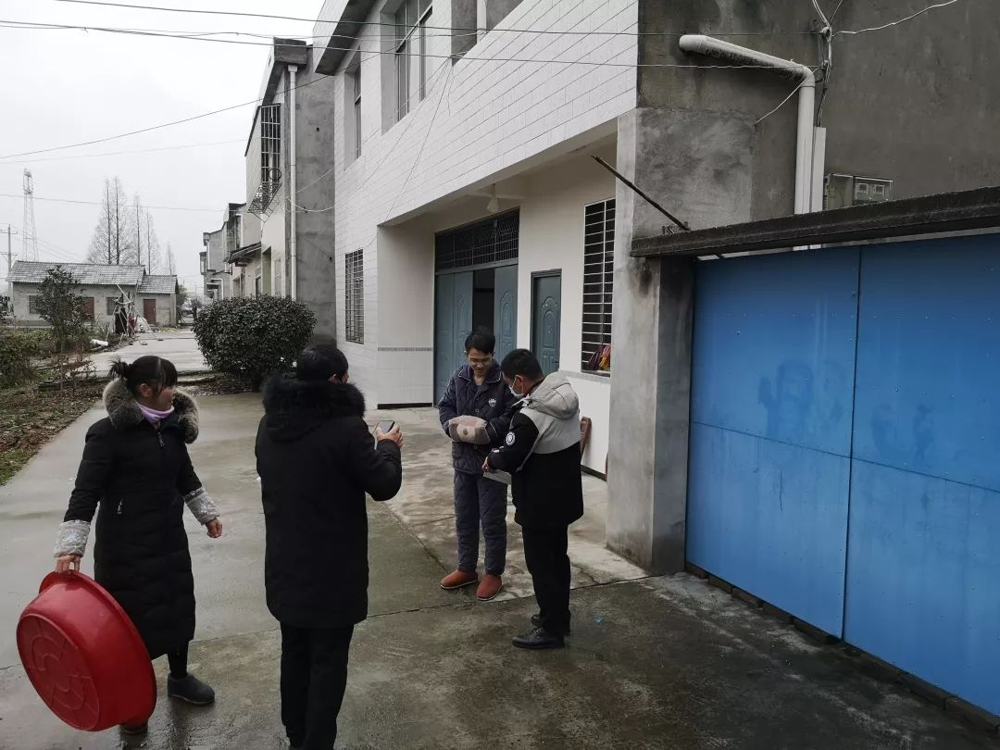

95后小伙除夕春节蹲守工厂三天，为湖北亲朋抢寄出上万个口罩 | 深网
原文链接 备份链接 作者 | 马关夏 出品｜深网·腾讯小满工作室 欢迎下载腾讯新闻APP，阅读更多优质资讯 这个春节，湖北武汉等地陆续发生新型冠状病毒感染的肺炎疫情牵动人心，面对严峻的防控形势，社会各方纷纷行动、驰援武汉。企业、明星捐钱捐 …

正月初二，1月26日，从武汉回潜江第六天。
潜江今日仍无病例确诊。
早上起来，精神不错。昨晚种种郁结一扫而光。
听丁雪的话，加了衣服。原来计划初四左右回武汉，衣物带的少。也低估了潜江的寒冷，无裤子可加了。岳母找了一条棉裤给我，红色。反正隔离在家不出门，我很乐意地穿上了。
妹夫还没有回来。我告知妻妹，天门昨日增加两例。她倒不太担心——也许是无暇担心。她带两个孩子，大的三年级，还算懂事；小的才一岁，每天也缠在她身上。岳父母有时会搭手，但也只是搭手而已，主要消耗还是在她身上。
同事H转来杨黎的武汉诗人访谈，问我们有没有类似的操作。我老实回答说没有，力有不逮，也无心情。她说《收获》想约她写封城记，但人不在武汉，就拒绝了。我把昨天日记转她看。和她讨论这种文字有没有价值。可能有一点意义，一点而已，不大。封城之际，只有个人的视角和经验，被动接受各种消息，真伪难定。至于政府、民间的各种通告，不乏常理之外的，个人也难评判。H是文艺学硕士，最后总结道：这就是技术的吊诡。一方面身体隔绝起来，除了在小空间里吃喝拉撒什么也看不到，一方面网络上真真假假足，信息滔天冲撞而来。人在这中间，好分裂啊。
一个人触角确实太少。日记写了一周，其实写我个人不多，准确说应该是“我和我的朋友们”。写朋友，则涉及隐私。
吃完早餐，我用借来的电脑把昨天日记发在了个人的公众号。文中提到了那位可能感染的朋友，我思虑不周，没有化名。不久那位朋友发消息来，让我修改。我既喜且愧。喜的是他有暇关注这个，说明在医院状态尚好；愧的是在医院还要为这个劳神。修改后给他道歉，相约安定后在武汉一聚。
照例，在单位群里汇报今天情况。同事X私聊我，说今天发烧了。前几天她老公发烧，刚降下去，两人隔离在家。X怀孕九个月，挺着大肚子，也不敢去医院产假。群里一片“正常”，消息太多。负责人遂让部门主任统一收集汇报。
午饭后，昨天来统计消息的郑玉堂带着村支书上门。先发了一沓口罩。全是字母，mascarilla faciale，desechable。网上搜索也没搜出来，可能是进口的？村支书也不知道，只说是上面发的。发完口罩，重新登记了我们的信息：姓名，身份证号，回汉时间，电话。表上有“随访人”“包保人”栏。大概是定点落实到人。


隔壁棉棉病还没好。岳母说是普通感冒，低烧，每天去杨市医院打吊瓶。回潜江第一天，她来玩过一次，我看精神尚好。知道她病后，我首先想到的就是肺炎，很想去问下消息，被岳母阻止了。隔壁的丁正说，肯定不是新冠肺炎。他是医生，我信他的话。
在群里问父母消息。小镇也高度戒备了。街上几乎没人。我哥的超市还开着门，生意照做。他本来有不少口罩。之前卖光了。自己已没有用的。镇上的几家药店都关了门，无处买口罩。街上的人自然都戴着口罩，可是多半是重复使用，做不到四个小时一换。农村物资短缺，应该是普遍情况。几天前武汉尚无口罩可买，何况僻远的农村。我手上还有四十多个闲置口罩，想寄给他，试了一下顺丰，已经不能收件了。明天再找建始朋友了解一下吧。
今天刷新闻不及前几天频繁。朋友圈武汉人居多，这会儿，很多人都在讨论外地人隔离、拒绝湖北人的消息。看了让人不适。高速关闸门，国道设路障，县道、乡道最简陋：一堆泥土和石块足矣。虽然也有朋友批评这是“以邻为壑”，但没有地域针对性，还不至于让人反感。但酒店不给湖北人住、见了鄂字头车牌就报警、挂标语驱逐湖北人，就让人心寒了。
南宁的璞闾，从昨晚一直在关注南宁对湖北人的态度：“对武汉过来的人，很多小区像过街老鼠一样人人喊打，报警警察来了看看又有，没有真正能帮助到大家。试问一个小区就找不到一个代表出来，大家协商吗，不必驱赶，协调让武汉的人遵守规矩自我隔离两周，需要的物资由本地人帮忙购买送到他们门口……”
后来她转发的南宁对湖北及到访的游客安排须知，所有湖北籍游客统一安置在乡村大世界度假村入住，广东湛江的徐闻县处理与此类似。在上海的诗人朋友冰马，经营一家民宿。有16个房间。他发了推送，说可以贡献出来给非从疫区出发的湖北人住。
写点开心的事。
小溪一岁一个月。回家之后，裹成了一个圆球，仍然热衷下地。尤其喜欢爬楼梯。回来的头两天，要扶她腋下走；这两天只需要轻轻提着她的手，稍作控制引导；偶尔放开她，她也能摇晃着走两步；可能再过一周左右，她就可以走路了吧。
这两天她睡眠亦好。今天下午更是破天荒睡了两个小时。晚上八点半入睡，到现在十点半，也一次没醒。
这几天的宅居，和我以前的假日生活并无两样。心神不宁，除了对身体反应的敏感，更多是因为外面的风暴：时时更新的病例增长和死亡带来的幻灭感，各种消息铺天盖地带来的隔世感。Z老师在朋友圈说：“现在不仅时间过得特别慢，网速也很慢了。这才封城几天啊，就给人以恍若隔世之感。冷清，寂静，时不时能听见自己的心跳。”武汉的一个90后诗人在后面留言：“感觉我家水压都变小了。”
昨天感染的朋友要转院了。同事X发来信息，温度已经降到37.3。情况和她老公前几天一样。应该不是肺炎。
睡前，看到正在召开记者会。周先旺说武汉确诊病例可能再增加1000例。对这些数据，我已有麻木之感。可能大家都进入了疲惫期，今天几个群里，也都比较安静。
最后记一则在“潜江诗群”里看到的潜江市委书记吴祖云60字疫情防控口诀：勤洗手，常开窗；戴口罩，把毒挡；少聚会，不徬徨；缓出行，同舒畅；病魔来。我刚强；遇不适，上医堂；粗淡饭，保安康；多运动，免疫强；破困局，勇担当；紧跟着，党中央。
（今天发现手机可以推送，没有去隔壁借电脑。）
原文链接 备份链接 作者 | 马关夏 出品｜深网·腾讯小满工作室 欢迎下载腾讯新闻APP，阅读更多优质资讯 这个春节，湖北武汉等地陆续发生新型冠状病毒感染的肺炎疫情牵动人心，面对严峻的防控形势，社会各方纷纷行动、驰援武汉。企业、明星捐钱捐 …
原文链接 备份链接 医疗防护资源不足是常态，各地资源调配需平衡，“灯下黑”区域渐次光亮，但少数地区的疫情宣传依旧不到位 外地务工返乡者最担忧的问题是年后经济收入断流、地域歧视，担心节后可能无法返工 本文首发于南方人物周刊 文 | 本刊记 …
原文链接 备份链接 我是河南信阳人，在武汉读书，毕业后留在武汉，现居洪山区，是一个1岁多的孩子的妈妈。武汉是疫情中心，老家信阳距离武汉很近，现在也是疫情重点排查城市。 1月20号，“封城”三天前，钟南山院士提到新冠肺炎存在人传人现象。这个 …
原文链接 备份链接 27.01.2020本文字数：1285，阅读时长大约3分钟 导读：“请大家高度重视，都不要走亲串友，更不能让外人来我们村走亲戚，避免病毒交叉感染。” 作者 | 第一财经 邵海鹏 编辑 | 冯一龙 武汉疫情牵动着国人的 …
原文链接 备份链接 编者按 这篇约稿来自一名化名为“平安”的武汉大学生，记述了她从返乡、封城，再到过年所经历的种种。这个特殊的春节，绝望与希望同在，寂静与喧嚣并存。身处「风暴中心」，她的心理有什么样的变化？让我们一起来看看她的五日。 “ …